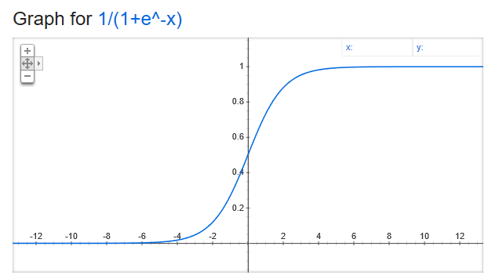
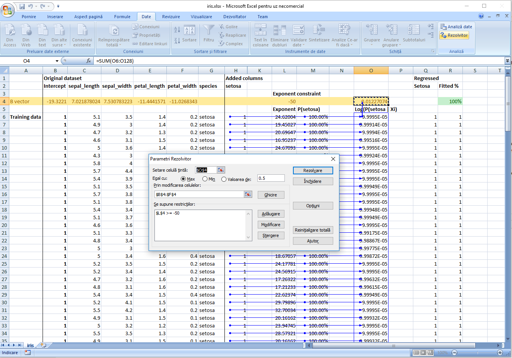
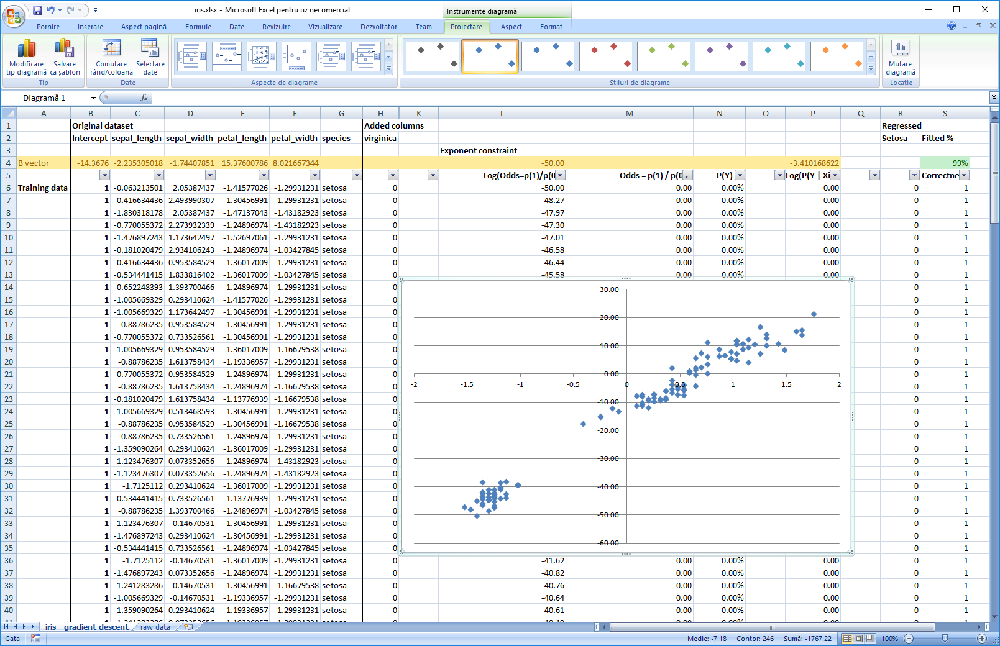
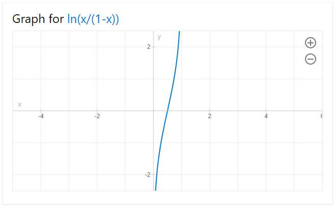
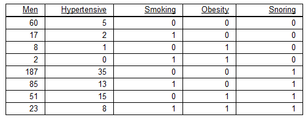
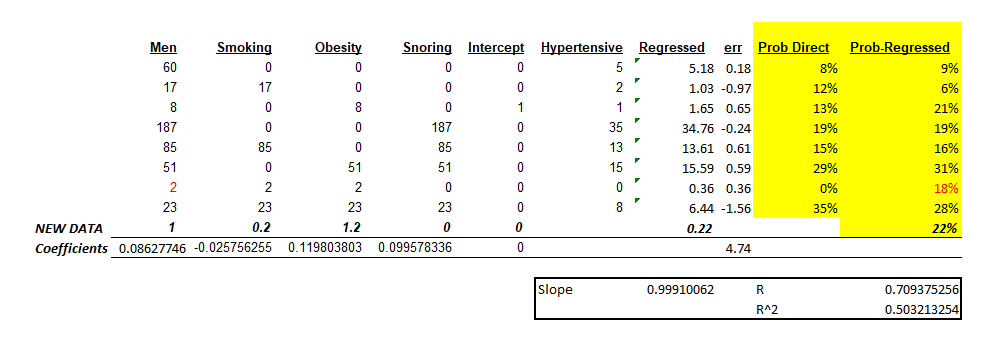
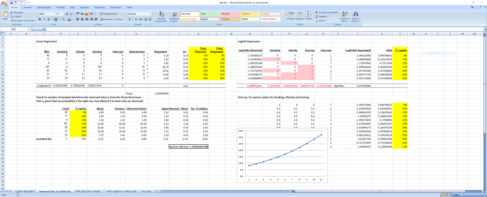
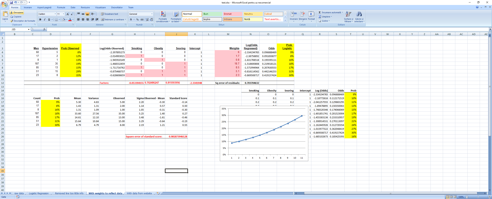
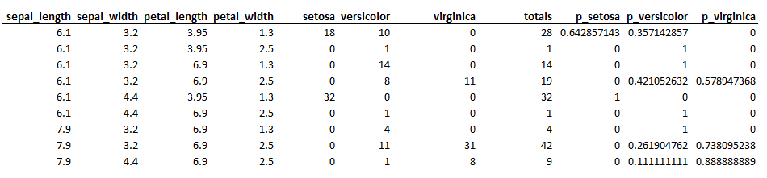
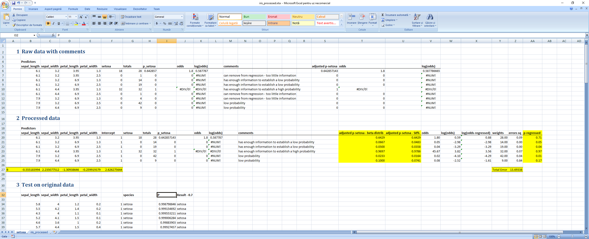

Logistic Regression
While linear regression is about predicting effects given a set of causes, logistic regression predicts the probability of certain effects. This way, its main applications are classification and forecasting. Logistic regression helps find how probabilities are changed by our actions or by various changes in the factors included in the regression.
The problem
The problem we want to solve is: given a vector of factors X=[X1 ... Xn], find a model that predicts the probability of a binary outcome to occur, P(X, outcome = 1). The input for the model are the previous observations of X and whether the expected outcome was 0 or 1.
One can obviosly try to reduce the problem directly to a linear regression problem, as exemplified in the PDF file here but the shortcomings are immediately apparent:
- R^2 is low
- There is not an obvious way to link the results to probability, the regression line goes above 1 and below 0.
- Residuals are obviously not normally distributed
If in this precise case, one predictor variable, one result, one can simply find a cut-off point, the problem becomes more difficult if we include several predictor variables in the equation.
The Logistic Regression Approach
We notice that the Logistic function, f(x) = 1 / (1+e^-(ax+b)), has properties that naturally map to our problem:
- it grows assimptotically from 0 to 1 - which are the natural boundaries of probabilty
- it is continuous
- has an inflection point from which
f(x)grows quickly from close to 0 to close to 1

And the wikipedia link: Logistic function
Therefore, we will find a mathematical model that uses the logistic function to map from causes to probabilities. The model aims to find a vector B that, when plugged into the logistic function multiplied by the factors X, the observed results match as closely as possible to the results determined by our model. In this case, our logistic function looks like f(X_i) = 1 / (1+e^-(b1 * xi_1 + ... bn * xi_n), where Xi = [xi_1, ... xi_n] are the observed X factors at point i.
We will further define our problem like this:
Xi = [xi_1 ... xi_n]- factors, with i between 1 and k. Attention, one of the factors needs to be1, the intercept - see the excel example belowB = [b1 ... bn]- coefficientsY = [y1 ... yk]- a vector of 1 and 0 of k elementsdot(Xi, B) == Xi_1 * b1 + ... Xi_n * bn
This is a fancy way of describing a table with n colums defined by X, the regression factors, and 1 column defined by Y, the observed result, with k rows.
The core of the model is assuming that the probability of Y being 1 is given by the logistic function:
- P(1|Xi) = f(Xi) = 1 / (1+e^-dot(Xi,B))
Which makes:
- P(0|Xi) = 1 - P(1|Xi)
So, in compact form:
- P(yi | Xi) = (P(1 | Xi) ^ yi) * (P(0 | Xi) ^ (1 - yi)), since yi is either 0 or 1
We conclude that P(yi | X) is another column, that of probabilities, but we cannot fully compute it because we are missing the vector B.
A perfect fit means P(yi | Xi) == 1, whatever i=1..k, which reads given the set of inputs Xi we estimate with absolute certainty that the result is yi, 0 or 1, just as observed in the real world. This leads to a real world equation of PRODUCT(P(yi | Xi), for i = 0..k) == 1
But since we only aim to model the real world, we are happy if this product is merely maximized by our estimated probability function (logistic) with B plugged in. That is,
PRODUCT(P(yi | Xi), for i = 0..k) = P(y1 | X1) * P(y2 | X2) * ... is maximized, as close as possible to 1.
which is equivalent to
log(PRODUCT) = SUM(log(P(yi | Xi)) = SUM(yi * log(f(Xi)) + (1-yi) * log(1-f(Xi))) where f(Xi) = 1 / (1+e^-dot(Xi,B)) is maximized as close as possible to 0.
Now we can use gradient descent to find the vector B. Unfortunately this method might be slow for large datasets because, for every incremental change in any B, all the exponentials and the logarithms for each line in the dataset need to be recomputed.
Implementation in Excel on the Iris dataset
- We download the Iris dataset.
- We setup 3 variables, one for each type of flower. They are 1 if the flower is of that type and 0 otherwise.
- We split the data into trainig and test dataset.
- Add a new column for intercept.
- Add a new row for the
Bvector. These are the values we want to find. - Add a new column for
P(setosa), the probabilities we want as result from the logistic regression.P(setosa) = 1 / (1 + EXP(-SUMPRODUCT(B, X)) - Add a new column, the log column,
log(P(yi | Xi), the column for which the sum we want to optimize as close as possible to 0. The formula for each of the elements in the column isyi * LN(P(setosa) + 0.0001) + (1 - yi) * LN( 1 - P(setosa) + 0.0001). I added a0.0001correction factor because, as the maximization algorithm goes on, we might end up withNaNvalues due to computingP(setosa) = 0which leads toLN(0)which is-infinity. - Add a summary value for the column at 7, as
SUM(log(P(yi | Xi))). - Use Excel Solver plugin to maximize the value of this summary value to as close to 0 as possible.
- Because the setosa is strictly separated from the other two types, the solver steps continues until the regression becomes very tight and the coefficients very large. In order for the
1/1+EXP(-SUMPRODUCT)not to overflow, I added a constraint for the-SUMPRODUCT()to be less or equal to 50. This does not seem to impact the quality of the regression. - Check the test data.
Excel file here

Note:
Performing the same steps for virginica leads also to very good results, while for versicolor the results are barely above random choice.
In the second iteration of the file, I have modified the regression so that it operates on standardized factors. This way, we can interpret the coefficients and see which factor contributes the most for classification. The picture below also contains the log(odds) vs most important factor chart, sorted by odds = P(1) / P(0), the ratio between the probability of 1 and 0. This is also a reminder that data for logistic regression should pe pepared in a similar manner to that for linear regression.

Note:
The factor we are minimizing, ce = -(y * ln(p) + (1 - y) * ln(1-p)), where y is the observed value (0 or 1) and p is the probability given by our model, is called cross entropy. Awesome explanation here
Linear Regression and Logistic Regression
By the choice for the logistic function, p = 1 / (1+EXP(-SUMPROD(Beta, X))), with Beta the coefficients for each of the factors X included in the regression, including the intercept, Logistic Regression hints stongly towards the linear regression.
We introduce the function Odds(p) = p / 1-p with its inverse, p = Odds / (1+Odds).
By simple arithmetic, we conclude that Odds(p) = EXP(SUMPRODUCT(Beta, X)) which leads to LN(Odds(p)) = SUMPRODUCT(Beta, X) which is a linear function.
Please remember that p is the probability for the event to happen, that is proability for the flower to be setosa, in the example above.
This function, ln(Odds(p)) = ln(p/1-p), called the logit function, maps the probability space [0,1] to a linear space [-inf, inf] in which we can do the regression.

In order to use linear regression to compute the probabilities and thus build our classifier, we need in our input data probabilities as well. The Iris dataset, as presented above, has only 0 and 1 inputs, so we need to collapse it to intervals on which meaninful probabilities can be computed.
In this example we will use another dataset which is already collapsed:

The data is described as follows:
- Number of men analysed
- Number of men with hypertension
- Wether the man is smoking, obese or snores
We want to:
- Find the real probabilities for a man to be hypertensive given the factors above - please note that we are talking about a small sample of the population, so the real probabilities are not simply the division between men with hypertension and men.
- Map these probabilities to individual conditions of a patient - he may be fat but not obese or he might just be a casual smoker, metrics which can be represented as fractions of the smoking, obese, snores variables above.
Steps
Linear regression on the raw, unprocessed, original data, just to have a benchmark
If we include an intercept, the intercept will reflect the amount of men included in the test, so, for a single man, the results for the prediction will be completely off. We will see that these results are pretty close to what we will obtain from logistic regression, because the probabilities themselves are in the lower part of the spectrum, where the logistic regression itself is quite linear. However, we expect that, as the risk factors increase significantly, for instance by codifying a "heavy smoker" or a "highly obese", the results from the linear regression to diverge from the real probabilities.
Please see how the variables for smoking, obese and snoring are codified. We want them to affect the slope of the regression, not the intercept.

Logistic Regression
We will do two types of logistic regression - one that does not account for the amount of men included in the sample and one which does. The problem with not ballancing the regression for the amount of men is equivalent to discarding the precision of the initial estimation of probability given by the sample (no of hypertensives / no of men). E.g., the more men we include, the more confident one can be that the expected value of the sample is closer to the actual expected value of the population.
First step for both regression is to remove from the regression the line where only 2 men are counted. This line does not contain enough information to be able to codify a probability out of it or, better said, the margin of error is too high.
The second step, also for both regressions, is to add the following columns:
Log(Odds Observed) = LN(P_observed / 1 - (P_observed))whereP_observed = hypertensives / total number of men in that category.- Smoking, obesity, snoring, codified as 1 if the person is smoking, obese or snoring.
- Intercept, all values equal to 1.
As result, we have:
- Log(Odds regressed), the result of the linear regression
- P Logistic which is the probability as computed from the logistic regression.
We also added two more tables:
- One under the logistic regression for drawing and validating how probabilities change for various fractions of Snoring, Smoking and Obese predictor variables.
- One under the linear regression to validate how many standard deviations the observed ratio (probability) is from the theoretical probability obtained from the logistic regression. That is, assuming the probabilities from the regression are correct, how likely it is to have observed the value we have observed. For this, we used the theoretical mean and variance for the binomial distribution,
mean = sample_size * pandvariance = sample_size * p * (1-p)
First run, the results without taking into consideration the sample size: Logistic Regression
{kind=link}

The second time we took into consideration the sample size by weightning the square of the residuals with the sample size when computing the square sum of the residuals we want to minimize. This is equivalent to having 1 row in the regression for each men that was considered in the regression. We see that this also minimizes the sum of the square standard scores, meaning that the results are now closer to the reality that was observed in the field. As a side note, I tried computing the Bs by minimizing directly the sum of the square standard scores and the results were very close to the ones predicted by the logistic regression. Weighted Logistic Regression
{kind=link}

Excel file here
Using of linear regression to determe the coefficients for Iris dataset
In order to use linear regression to determine the coefficients, the data needs to be binned, put in a form from which we can extract probabilities. For the Iris dataset, I did this with the following Python script:
# -*- coding: utf-8 -*-
"""
Created on Fri Aug 26 15:07:47 2018
@author: alexandru gris
"""
import pandas as pd
from functools import partial, reduce
# columns used as predictors
X = ['sepal_length',
'sepal_width',
'petal_length',
'petal_width']
# columns for the result on which we train the algorithm
Y = ['setosa',
'versicolor',
'virginica']
data = pd.read_csv("iris.csv")[X + Y]
# split each dimension intro two groups, low and high
# each group should have a representative number of elements in it
# had we had more items in the dataset, we could have simply increased the group count to 3
# by binning, part of the information is lost but we hope to compensate through
# the curvy form of the logistic function
groups = 2
# 1e-10 below is a small hack to include the last item in the last group
# the split could / should have been done based on percentiles, not range
# we will do by range just to keep the code simple
stats = { x : {'range': mx-mn, 'min': mn, 'grp_range': (mx-mn) / groups } \
for x, mx, mn in ( (x, data[x].max() + 1e-10, data[x].min()) for x in X) }
# the function which will compute the new index for grouping
def fn(x, idx):
"""x - column. idx - current index for the row"""
idx = int((data.loc[idx][x] - stats[x]['min']) * groups / stats[x]['range'])
return (idx + 1) * stats[x]['grp_range'] + stats[x]['min']
# create the summary table
agg = {y : pd.DataFrame.sum for y in Y}
x = data.groupby([partial(fn, x) for x in X]).agg(agg)
# add the totals and the probabilities column for each vector
# totals:
x['totals'] = reduce(lambda c1, c2: c1 + c2, [x[c] for c in Y])
# probabilities for setosa, versicolor, virginica:
for prob, col in (("p_" + y, y) for y in Y):
x[prob] = x[col] / x['totals']
# print a csv file for further processing in excel
with open("iris_processed.csv", "w") as f:
pf = partial(print, file=f)
pf(",".join(X+list(x)))
for i, r in x.iterrows():
pf(",".join([str(s) for s in (list(i) + list(r))]))
Summarized data looks like this:

The predictor rows contain the middle of the group range for that particular bin, which does not reflect the actual mean of the data inside the bin. This is highly sensitive to outliers and thus a bad choice. A better way would have been to first split each predictor in equal-sized groups, compute the median for each group, and then use this number as part of the index for each bin.
When we compute the odds and log(odds) to use in the regression we notice 3 possible error scenarios:
- too little data in one bin - we remove that bin from the regression
- all data in a bin is in the category we want to predict - which leads to the odds being computed to infinity
- all data in a bin is not in the cateogory we want to predict - which leads to the logaritm being infinite
Neither of the two last scenarios account for a usable probability, but we have enough data in those bins to draw a conclusion that we cannot simply discard. I used two approaches and the results for the regression were very similar:
- Use the beta distribution and start from an a-priori value of 50%-50% (alpha=1, beta=1), which is equivalent to saying just before we started to count we have observed an opposite value and adjust the probability based on this formula - this gives us an upper (or lower) bound for the probability of 1 in that particular bin.
- Assume that the string of 0s or 1s was a random extraction from the all possible extractiobs but that it had a rather high probability to occur (of 50% in this case, a value which seemed right to me :) ). Thus consider p^bin_size = 0.5 and compute p=EXP(LN(0.5) / bin_size).
Excel file here
Results for the regression at a 0.5 threshold were not as good as with direct maximization of the log-of-probabilities, but rasing the threshhold at 0.8 leads to perfect prediction. Picture below:

And link here: Logistic regression
{kind=link}
Conclusions
We used logistic regression to build a clasifier on the Iris dataset and to predict the probability of a person having hypertension given a set of predictors. We used two ways to compute the regression coefficients: one by maximizing directly a probability function using the gradient descent, the other by applying linear regression to the log-odds function and then computing the probabilities from it. The third example was to process the Iris dataset used in the first regression and to compute the coefficients in a similar manner to that used for determining hypertensives.
Additional notes - decision boundary
If we set the classification decision to 1 when p(1) > 0.5, given the equation of the logistic function, it is equivalent to saying y = b0 + ... bn*xn > 0. This is the equation of a line which divides the factor space in two sections.
If we want to divide the space into an enclosed area, with outside and inside spaces, we can set, for instance, the regression to include squares of its factors, like y = b0 + b1*x1 + b2*x2 + b3*x1^2 + b4 *x2^1. In this example, for instance, if we set b0 = -1, b1 = 0, b2 = 0, b3 = 1, b4 = 1, at the boundary condition we arrive precisely at the equation for a cirle, 1 = x1^2 + x2^2.
The beauty of logistic regression is that the decision boundary can be visualised by just comparing the regression term to 0, since we know that in that particular point P=1/(1+e^0) = 0.5